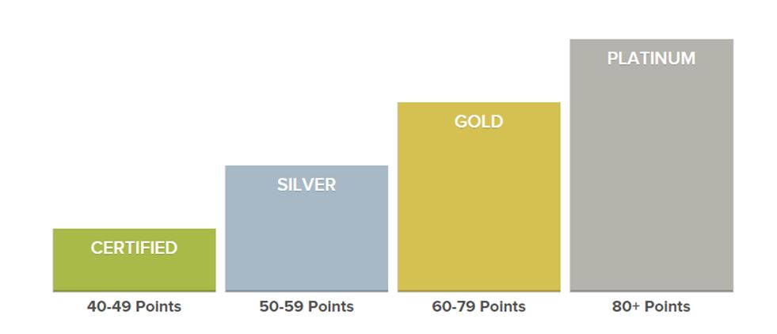

Tools Used
- Building Motivation Over Time
- Feedback
- Financial Incentives and Disincentives
- Norm Appeals
- Obtaining a Commitment
- Overcoming Specific Barriers
- Prompts
Initiated By
- U.S. Green Building Council
Results
LEED rating systems for Existing Buildings: Operations & Maintenance (GSA Study):
- 25 percent lower energy use
- Operational costs cut by 19 percent
LEED rating systems for Design and Construction
- Dramatic reductions in waste. In Canada alone, between 2005 and 2015, LEED builders recycled more than 2.7 million tonnes of construction and demolition waste in Canada.
- Green materials are being more widely available and more widely used (market transformation).
Overall
- By August 2015, LEED had been adopted in more than 150 countries and territories worldwide, with 13.8 billion square feet of building space participating in the suite of rating systems and 1.85 million feet certifying per day around the world.
Landmark Case Study
LEED
2019 Youtube Program Update Video from USGBC
Leadership in Energy and Environmental Design (LEED) is a tremendously successful program that engages builders and owners in designing, building, selling / buying and operating more energy-efficient buildings. It awards points for meeting targets and doing targeted behaviors like benchmarking and tracking energy and water consumption, using specific types of materials, and recycling waste materials. It has become the most used green building rating system out there, adopted in more than 150 countries and territories worldwide. The program received Landmark designation in 2015.
Background
Note: To minimize site maintenance costs, all case studies on this site are written in the past tense, even if they are ongoing as is the case with this particular program.
The U.S. Green Building Council created LEED in the 1990s and it came to Canada in 2002. Its goal is simple: to create resource-efficient, high-performing, healthy, cost-effective buildings.
LEED is an acronym for Leadership in Energy and Environmental Design. The U.S. Green Building Council is a Washington D.C.-based, non-profit coalition of building industry leaders.
LEED provides a framework that gives project teams the ability to choose solutions that contribute to aggregate environmental progress. Many small parts working together can have big impacts.
Getting Informed
LEED is a consensus based rating system. A corps of volunteers from across the built environment work with staff to develop LEED. These 150+ volunteers participate on the LEED Committees, providing insight into benefits of LEED and barriers to change as well as possible solutions. The LEED Steering Committee is responsible for the work of these committees. Also, the LEED International Roundtable connects USGBC to built environment professionals in countries around the world, who propose solutions to overcoming market and technical barriers to using LEED in their countries.
LEED’s experience over the years is that owners build LEED for two main reasons: ego and dollars. Getting certified demonstrates how green a building is and can boost press coverage. In addition, as studies have shown, LEED buildings find tenants more easily and can charge more for rent. Certification may also be required to take advantage of certain government incentive programs.
Delivering the Program
To receive LEED certification, building projects satisfy prerequisites and earn points to achieve different levels of certification. Prerequisites and credits differ for each rating system, and teams choose the best fit for their project. There are five rating systems that address multiple project types. LEED rating systems for Existing Buildings: Operations & Maintenance is one of these five.
Each rating system is made up of a combination of credit categories. For example, building performance is assessed on the basis of energy, water, waste, transportation and human experience. Within each of the credit categories, there are specific prerequisites projects must satisfy and a variety of credits projects can pursue to earn points. The number of points the project earns determines its level of LEED certification. There are four levels of certification - the number of points a project earns determines the level of LEED certification that the project will receive. (Building Motivation Over Time; Challenges; Feedback and Recognition; Norm Appeals; Vivid, Credible, Personalized, Empowering Communication)

While LEED began with a Design and Construction rating system reflecting its roots within the architecture and construction industries, it quickly expanded its scope to cover operational performance. Green buildings provide immediate and measurable results for building managers and occupants. LEED enables a project to benchmark energy and water, which is a critical tactic that is saving companies and government millions of dollars, year over year, simply by reducing costs through saved energy, water and other resources. Green building measures that were once deemed exceptional are now industry standard, which is why USGBC continually raises the bar.
LEED has becomes increasingly rigorous over time. In 2015 it was in its third version, with its most stringent energy reduction targets. (Building Motivation Over Time)
One of the most recent refinements to the program involves the introduction of a “Dynamic Plaque” building performance monitoring and scoring platform. This involves an annual software subscription for inputting building performance data, accessing customer service support and achieving LEED certification or recertification. An optional display unit (plaque) showcases the commitment to building performance and provides up to date information. All claims need to be substantiated annually through submission of relevant records / documentation.
The LEED Dynamic Plaque makes the invisible actionable and offers a means for interaction with the building on multiple levels: visitors can "see" performance, occupants can provide feedback on their experience, and owners and building managers can view trends to make informed decisions to optimize the building, benefitting people, planet and profit. (Building Motivation Over Time; Challenges; Feedback and Recognition; Norm Appeals; Vivid, Credible, Personalized, Empowering Communication)
Overcoming Barriers
- Owners face a higher initial investment, but LEED buildings find tenants more easily and can charge more for rent. In addition, some government incentive programs are offered, that help offset the initial investment. The program stresses these well-documented savings.
- Builders face an initial learning curve and the actual nuts and bolts of certifying a LEED building aren’t the most fun. The points-based system is a bit of a cross between doing your taxes and filing a lawsuit. It takes time and money to build the capacity to be able to do it, and not all companies have the resources. The program works at increasing ease-of-use.
Financing the Program
A fee is required to register a building, and to submit design and construction applications. Fees, which are based on total floor space, range from a minimum of $2,900 to over $1 million. There are usually some additional, building costs as well to quality for LEED certification. These range from 1% to 6% of the total project cost, with an average cost increase of 2%, or an extra $3–$5 per square foot.
Measuring Achievements
LEED rating systems for Existing Buildings: Operations & Maintenance, where certification occurs post-occupancy, is based on real energy data for the past year. Buildings must be re-certified each year, using the past year’s performance data. The data must include the following.
- Measured and benchmarked energy performance (not just raw energy consumption but actual performance using comparative benchmark targets);
- Metered water use
- Measured rate of occupant use of transit/alternative commuting
- Measured percentage of waste recycled, based on hauler reports and audit reports
- Measured fresh air delivery
- Occupant surveys
- Mandatory policies that require green operational practices including required green cleaning and sustainable site management
LEED rating systems for new construction ask project teams to demonstrate a potential percentage improvement over a baseline. The certification process for design teams is made up of two consecutive applications: one including design credits, and one including construction credits. All of the LEED credits in each rating system are assigned to either the design application or the construction application. The design credits include those that are the purview of the architect and the engineer, and are documented in the official construction drawings. The construction credits include those that are predominantly under the purview of the contractor, and are documented during the construction and commissioning of the building.
U.S. General Services Administration (GSA) Study
To study the impacts of LEED's rating systems for Existing Buildings: Operations & Maintenance, the General Services Administration (GSA) selected 22 representative green buildings from its national portfolio, including 12 buildings whose performance was assessed initially in 2007. The evaluation was comprehensive, measuring environmental performance, financial metrics, and occupant satisfaction. Results were compared to both industry and GSA baselines. All buildings in the study incorporated sustainable design practices. Sixteen were LEED-NC certified or registered, representing more than one-third of the LEED buildings in GSA’s inventory at the time of the study. The remaining six buildings implemented a suite of sustainability strategies to enhance building performance.
Results
Impacts – Individual Owners and Builders
Energy reduction
The 2011 GSA study found LEED-certified buildings to have 25 percent lower energy use compared to the national average. These high-performing buildings reduced operational costs by 19 percent compared to the national average. LEED Gold buildings were singled out as being particularly high performers, with a 27% lower energy use.
Waste reduction
Clark Builders in Edmonton, Canada provides an example of the impacts LEED has had on an individual construction company. Cam Munro is the Innovative Construction Manager at Clark Builders and he can thank LEED for his title. Clark took on its first LEED project in 2003, and one year later 50 per cent of the projects at this large construction company pursued a LEED certification. Munro says 15 years ago his company would have been happy diverting 10 to 15 per cent of its construction waste from landfills. “Today, we've got numerous projects that are over 95 per cent diverted from landfills,” says Munro.
Green materials
LEED rewards builders for using locally sourced materials and environmentally friendly glues, paints, primers, sealants and materials with low or no-VOC and no added urea formaldehyde. Many of these materials were hard to get in 2003, but by 2015 they were readily available. Clark Builders doesn’t even stock materials that don’t meet these LEED requirements, because it’s not worth the hassle to source and separate them. So by default even non-LEED projects get greener, healthier materials. “We're changing our processes so that everything we're doing could be a LEED job even if it isn't,” says Munro.
Impacts- Overall
By August 2015, LEED had been adopted in more than 150 countries and territories worldwide, with 13.8 billion square feet of building space participating in the suite of rating systems and 1.85 million feet certifying per day around the world.
Energy reduction
Given the realities of the real estate market, the evolution of the LEED rating system over time, and LEED’s substantial international presence, LEED has not yet been able to rigorously calculate its overall impact across all participating buildings internationally. It is the organization’s hope that the LEED Dynamic Plaque platform, which calculates real-time energy and water usage, will eventually be able to provide the data required to do so. In the interim, for the purpose of this case study, the scope of energy savings can be assumed to be in the billions of kWh per year. (35,000,000,000 kWh per year = 13.8 billion square feet of buildings certified x 25% energy reduction of LEED-certified buildings compared to industry average x average of at least 10 kWh per square foot per year.)
In Canada alone, between 2005 and 2015, LEED is credited with saving 2.6 billion kWh hours of electricity, enough energy to power 89,000 homes in Canada for a full year. Using EPA's national benchmarking scale for energy performance, LEED for Existing Building projects are high performers: 35 percent are in the top ten percent nationally, and over 60 percent are in the top 15 percent nationally.
LEED has been so successful at ratcheting up energy efficiency that the national model building code and some regional codes will require all buildings to be 25 per cent more efficient than the building code — LEED is becoming the new normal.
Waste reduction
In Canada alone, between 2005 and 2015, LEED builders recycled more than 2.7 million tonnes of construction and demolition waste in Canada.
Green materials
LEED is gradually ratcheting up the availability of green materials as well. For example, Low Volatile Organic Compound (VOC) paints and materials take harmful chemicals out of the supply chain thus having a tangible impact on the health of building’s indoor air quality, improving the conditions inside for occupants. This was a difficult credit to achieve when LEED was introduced into the market in 2001. As more projects were certified, manufactures responded to the demand by increasing the supply of low-VOC paints and materials
Notes
- This case study was compiled in 2016 by Jay Kassirer. It is largely based on an article in Green Energy Futures, titled "LEED works: How a green building rating system transformed the construction industry", by David Dodge and Duncan Kinney
- There has been some discussion in the literature about the difference between reductions in site (building) energy and overall reductions in energy used (taking into account the cost of producing and transporting energy to the site for use.) Regardless, if the campaign was successful in shifting energy use choices and habits – as measured by actual site energy use reductions – it illustrates a successful behavior change approach.
- 2021 update: In March 2021, the U.S. National Bureau of Economic Research published a working paper titled, "Does LEED Certification Save Energy? Evidence from Federal Buildings." This paper "examines the effects of LEED certification on energy efficiency in federally owned buildings. Using propensity score matching and difference in differences models, (it found) no effect of LEED certification on average energy consumption. This reflects the fact that energy use is one of a number of attributes that receives scores under the LEED program. Buildings with above average energy scores have greater energy efficiency post-certification. Some other attributes, notably higher water scores, decrease energy efficiency post-certification. Trade-offs across LEED attributes account for the absence of energy savings on average. If energy efficiency is the primary policy goal, LEED certification may not be the most effective means to reach that goal."